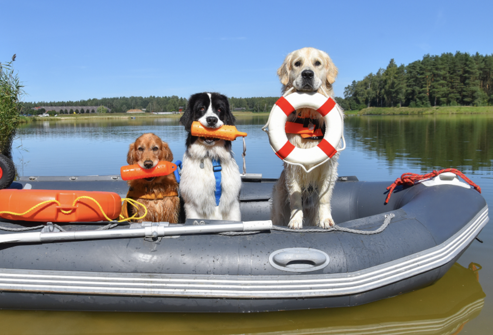
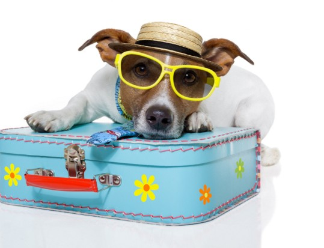
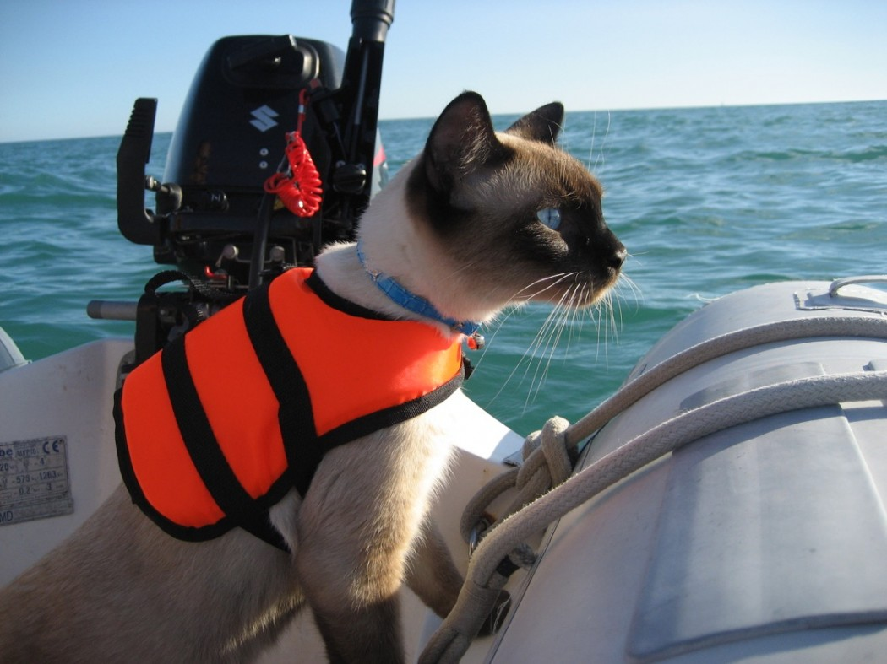

Bring a Pet First-Aid Kit
Just like people, pets can experience minor injuries or become unwell while spending time on the water. Having a pet first-aid kit on board can help you prepare for unexpected situations. Consider packing items such as gauze, bandages, saline solution, tweezers for removing splinters, and any medications your pet normally needs. Keep the kit in a dry, easily accessible location and make sure its contents are suitable for animals. Human medications and some first-aid products can be harmful to pets, so always check with your veterinarian before using them. Remember that a first-aid kit is not a replacement for veterinary care, and you should seek professional help if your pet becomes seriously injured or ill.

Provide Fresh Water and Plan Mealtimes
Spending time on a boat can be tiring for pets, especially on warm or sunny days. Always bring plenty of fresh drinking water and a portable bowl so your pet can stay hydrated throughout the trip. Do not rely on lake or ocean water as a drinking source, since it may contain harmful organisms or other contaminants. It's also a good idea to avoid feeding your pet a large meal immediately before departure, as the motion of the boat may contribute to nausea or motion sickness. Instead, plan their meals around the trip and ask your veterinarian for advice if your pet is prone to vomiting or other travel-related symptoms. Never withhold water to prevent accidents, and make sure your pet has regular opportunities to drink.

Protect Your Pet from the Sun
Spending hours on the water can expose pets to strong sunlight, and the reflection off the water may increase their exposure. Pets with light-colored fur, thin coats, or exposed skin can be especially vulnerable to sunburn. Provide a shaded area where your pet can rest and make sure they can move out of direct sunlight whenever possible. Pet-safe sunscreen may also help protect vulnerable areas, such as the nose and ear tips, when used according to the product instructions. Never assume that human sunscreen is safe for animals, as some ingredients can be harmful if licked or swallowed. Keep an eye out for signs of overheating, including excessive panting, weakness, or unusual behavior, and move your pet to a cooler area if needed. If you suspect heatstroke, seek emergency veterinary care.

Always Use a Properly Fitted Life Jacket
Even pets that are confident swimmers can get into trouble in open water. Strong currents, cold temperatures, waves, and exhaustion can make swimming dangerous, while a frightened pet may struggle to get back onto the boat. A properly fitted pet life jacket provides additional buoyancy and often includes a handle that can help you lift your pet out of the water. Choose a jacket that fits securely without restricting movement, and follow the manufacturer's fitting and use instructions. Allow your pet to get used to wearing it before your trip, and check that it stays in place when they move. A life jacket does not replace supervision, so always keep an eye on your pet around the water. Products such as the GF Pet Dog Life Vest offer an option to consider when preparing for a boating adventure.
Final Reminder
A safe boating trip starts with preparation. Make sure your pet wears a properly fitted life jacket and is supervised around the water at all times. With the right supplies and a little planning, you can help your pet enjoy the adventure while staying safe. Happy boating and smooth sailing!